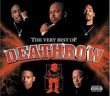
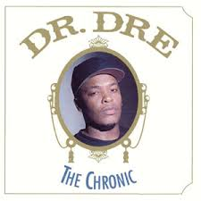
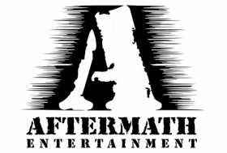
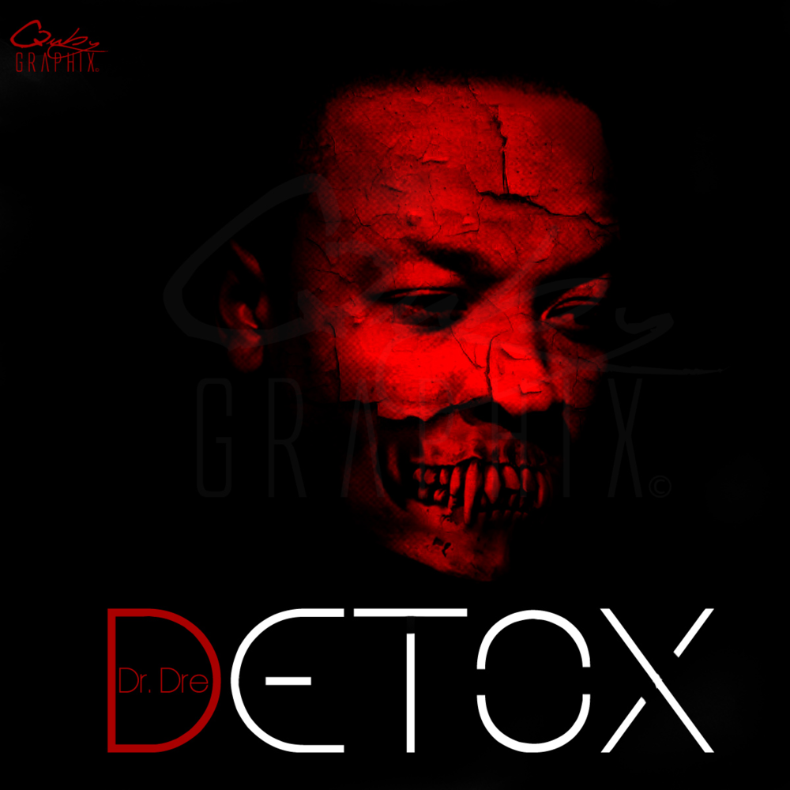
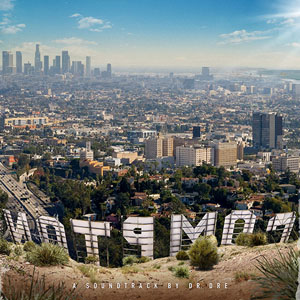

Andre Romell Young
Информация
• Имя при рождении: Андре Ромелл Янг
• Дата рождения: 18 февраля 1965
Лейблы:
Kru-Cut Records (1984 — 1986)
Ruthless (1986 — 1991)
Priority (1988 — 1991)
Death Row (1991 — 1996)
Interscope (1992 — наст. время) Aftermath (1996 — наст. время)Навигация

Track 1
Artist 1

Андре Ромелл Янг, более известный под сценическим именем Доктор Дре (англ. Dr. Dre) — американский рэпер и продюсер, один из наиболее успешных битмейкеров в рэп-музыке. Считается важнейшей фигурой в популяризации и одним из отцов-основателей стиля джи-фанк — одного из стилей хип-хопа Западного побережья, который появился в начале 1990-х в Лос-Анджелесе.
Молодость
Андре Ромелл Янг, первый ребёнок Верны и Теодора Янг, родился 18 февраля 1965 года, когда Верне было всего лишь 16 лет, и они ещё не были женаты. Своё второе имя — Ромелл — Дре получил благодаря отцу, который любил группу The Romells. В 1968 году Верна развелась с Теодором Янгом и позже вышла замуж за Кертиса Крэйона. В 1976 году Янг начал посещать школу «Vanguard Junior High School», но из-за активности преступных банд в окрестностях школы её пришлось сменить на «Roosevelt Junior High School». Мать Дре позже вышла замуж за Уоррена Гриффина, которого она встретила на своей новой работе в Лонг-Бич. Впоследствии у Уоррена и Верны родилось несколько детей. Таким образом, у Дре появилось три единоутробных сестры и единоутробный брат, который впоследствии тоже стал популярным рэпером, известным под именем Warren G.
World Class Wreckin' Cru (1984—1985)
Вдохновлённый песнями Grandmaster Flash и «The Adventures of Grandmaster Flash on the Wheels of Steel», Андре начинает посещать клуб «Eve After Dark», где наблюдает множество выступлений диджеев и рэперов. Впоследствии он стал диджеем в клубе под именем Dr. J, образованном от прозвища Джулиуса Эрвинга (Julius Erving), его любимого баскетболиста. В этом же клубе он знакомится со своим единомышленником Antoine Carraby, который позже станет членом N.W.A. Вскоре он меняет своё прозвище на Доктор Дре — смесь предыдущего псевдонима Dr. J и его первого имени, — имея в виду себя как «Master of Mixology».
N.W.A и Ruthless Records (1986—1991)
В 1986 Доктор Дре встретил рэпера Ice Cube, с которым записал несколько песен для рэп-лейбла Ruthless Records,
принадлежавшего Eazy-E. Позже Доктор Дре, Ice Cube, Eazy-E, Arabian Prince, MC Ren и DJ Yella объединились в группу,
которой дали название «Niggas With Attitudes» (с англ. — «Ниггеры С Мнением»), или, сокращённо,  N.W.A. Группа работала в новом тогда жанре «гангстерского рэпа», записывая агрессивную музыку,
дополненную нецензурными текстами о насилии, бедности, сексе, наркотиках и противостоянии с полицией.
Их песни сильно отличались от творчества предшественников, и N.W.A быстро прославились, став первыми настоящими звёздами гангста-рэпа.
Их первый полноформатный альбом Straight Outta Compton, и в особенности вошедшая в него песня «Fuck tha Police», стал весьма популярен,
несмотря на полное отсутствие продвижения в виде эфиров на радио или телевидении.
N.W.A. Группа работала в новом тогда жанре «гангстерского рэпа», записывая агрессивную музыку,
дополненную нецензурными текстами о насилии, бедности, сексе, наркотиках и противостоянии с полицией.
Их песни сильно отличались от творчества предшественников, и N.W.A быстро прославились, став первыми настоящими звёздами гангста-рэпа.
Их первый полноформатный альбом Straight Outta Compton, и в особенности вошедшая в него песня «Fuck tha Police», стал весьма популярен,
несмотря на полное отсутствие продвижения в виде эфиров на радио или телевидении.
The Chronic и Death Row Records (1992—1995)
После конфликта с Eazy-E из-за финансовых разногласий Доктор Дре, как и Ice Cube, покинул группу на пике её популярности и по  совету друга стал сотрудничать с Шугом Найтом — известным гангстером, бизнесменом и владельцем лейбла Death Row Records. В 1991 году Дре выпускает свой первый сингл. Это был дуэт со Snoop Dogg’ом, вошедший в саундтрек фильма «Под прикрытием». Дебютный сольный альбом Дре The Chronic был выпущен на студии Death Row Records в следующем году. На этом альбоме Дре создал новый стиль рэп-музыки, с точки зрения как инструментальной, так и текстовой составляющих.  Благодаря синглам «Nuthin' but a 'G' Thang», «Let Me Ride» и «Fuck wit Dre Day», в записи которых принял участие Snoop Dogg, альбом стал феноменом для хип-хопа своего времени, а новый стиль G-funk доминировал в рэп-музыке на протяжении всех 1990-х. Помимо работы над собственными альбомом, Дре продюсирует дебютный альбом Снуп Догга Doggystyle,который сразу же попал на первую строку чарта Billboard. В 1994 году Дре также спродюсировал саундтреки к фильмам Above the Rim и Murder Was the Case. В 1995 году, как только Death Row заключили контракт с Тупаком, Дре покинул лейбл, аргументируя своё решение тем, что Шуг Найт стал коррумпированным, нечестным и неконтролируемым. После этого Дре организовал свой собственный лейбл Aftermath Entertainment, ставший дочерней организацией по отношению к Interscope Records.
Aftermath Entertainment (1996—1998)
26 ноября 1996 года Янг выпустил следующую пластинку — Dr. Dre Presents the Aftermath, который стал первым альбомом, записанным на Aftermath. Несмотря на то, что RIAA удостоил альбому статус «Платина», среди поклонников он не пользовался популярностью.  В октябре 1996 года Дре представил «Been There, Done That» на Saturday Night Live. Aftermath Entertainment стоял перед судебным процессом нарушения торгового бренда Aftermath, так как тогда уже существовала группа с таким же названием. В 1996 году также выходит сборка треков First Round Knock Out, где были собраны все неизданные записи Дре, начиная с World Class Wreckin’ Cru и заканчивая записями Death Row. Поворотным моментом для Aftermath стал 1998. Тогда Jimmy Iovine, глава Interscope, посоветовал Дре подписать Эминема — рэпера из Детройта. Янг также спродюсировал дебютный альбом Эминема The Slim Shady LP, вышедший в 1999 году.
2001 (1999—2000)
Второй сольный альбом, презентация которого состоялась 16 ноября 1999 года, ознаменовал собой возвращение Дре к корням гангста-рэпа.
Первоначально он был назван The Chronic 2000, но через некоторое время название пришлось поменять на 2001,
потому что в мае 1999 года Death Row выпустил сборник Chronic 2000: Still Smokin. В числе других рабочих заголовков были The Chronic 2001 и Dr. Dre.
В работе над дисками приняли участие многие приглашённые рэперы: Devin the Dude, Hittman, Snoop Dogg, Xzibit, Nate Dogg и Эминем.
Альбом имел большой успех, поднялся до второй строчки в чартах Billboard 200 и  в конечном итоге стал шесть раз платиновым.
Главной задачей альбома было подтвердить, что Дре «всё ещё решает на улицах» несмотря на то, что не давал о себе знать около 5 лет.
Альбом включал в себя такие супер-хиты, как «Still D.R.E.» и «Forgot About Dre», впервые исполненные в программе Saturday Night Live 23 октября 1999 года.
В 2000 году Дре получил Грэмми в номинации Лучший продюсер года, после чего присоединился к туру Up in Smoke Tour,
в котором также принимали участие Eminem, Snoop Dogg и Ice Cube.
Успех альбома 2001 совпал для Дре с участием сразу в нескольких судебных процессах. Иск Lucasfilm Ltd.,
кинокомпании-производителя «Звёздных войн», был связан с использованием им торговой марки «Deep Note».
Группа The Fatback Band подала на Дре в суд за нарушение авторских прав; речь шла о фрагменте их песни «Backstrokin'», использованном в треке «Let’s Get High»
из альбома 2001. Дре пришлось выплатить группе компенсацию в размере $1,5 млн
в конечном итоге стал шесть раз платиновым.
Главной задачей альбома было подтвердить, что Дре «всё ещё решает на улицах» несмотря на то, что не давал о себе знать около 5 лет.
Альбом включал в себя такие супер-хиты, как «Still D.R.E.» и «Forgot About Dre», впервые исполненные в программе Saturday Night Live 23 октября 1999 года.
В 2000 году Дре получил Грэмми в номинации Лучший продюсер года, после чего присоединился к туру Up in Smoke Tour,
в котором также принимали участие Eminem, Snoop Dogg и Ice Cube.
Успех альбома 2001 совпал для Дре с участием сразу в нескольких судебных процессах. Иск Lucasfilm Ltd.,
кинокомпании-производителя «Звёздных войн», был связан с использованием им торговой марки «Deep Note».
Группа The Fatback Band подала на Дре в суд за нарушение авторских прав; речь шла о фрагменте их песни «Backstrokin'», использованном в треке «Let’s Get High»
из альбома 2001. Дре пришлось выплатить группе компенсацию в размере $1,5 млн
Detox (2001—2007)
За 20 лет музыкальной карьеры Дре выпустил лишь два сольных альбома, и его третий альбом Detox, по словам музыканта, должен стать последним. В 2002 году в новостях MTV Дре рассказал о том, что Detox будет концептуальным альбомом. Работа над ним, начавшаяся было в первом квартале 2004 года, в том же году была прекращена: Янг решил заняться продюсированием других исполнителей. В конце концов он перенёс дату релиза на конец 2005 года. После нескольких задержек стало известно, что альбом будет выпускать Interscope Records, а дату релиза перенесли на 2009 год. В числе исполнителей, чьё участие в альбоме было подтверждено, — DJ Khalil, Nottz, Bernard «Focus» Edwards Jr., Hi-Tek, J.R. Rotem, RZA, Jay-Z, Warren G и Boi-1da. По сообщению журнала Rolling Stone, Snoop Dogg утверждал, что работа над альбомом была завершена ещё в июле 2008 года. После очередной задержки, связанной с продюсированием альбомов Before I Self Destruct и Relapse 50 Cent’a и Эминема соответственно дату релиза снова перенесли, теперь на конец 2009 года. В начале 2009 года Янг продюсирует и выступает в качестве гостя в песне Эминема «Crack a Bottle», которую в первую неделю после её появления скачало более 419 000 человек. Она заняла первое место в чарте Billboard Hot 100 12 февраля 2009 года. В конце 2010 года Дре снова пообещал выпуск альбома; первым синглом стал «Kush» при участие Snoop Dogg и Akon; вскоре вышла пиратская версия песни «I Need a Doctor». В начале 2011 года вышли 2 сингла. Клип «I Need a Doctor» при участии Эминема появился в сети 24 февраля 2011 года (в нём Дре сравнивает своё творческое затишье, которое началось в 2001 году, с аварией и комой, выбраться из которой ему помогает Эминем, как однажды помог ему Дре, в основном клип состоит из флешбеков жизни Дре). В итоге альбом Detox так и не вышел.
Compton (2015 — 2022)
Третий альбом Дре под названием Compton вышел 7 августа 2015 года в iTunes Store и 21 августа на физических носителях. Данный альбом является как студийным альбомом, так и саундтреком фильма «Голос улиц», рассказывающего историю группы N.W.A и вышедшего в прокат 14 августа 2015 года. Альбом дебютировал на второй строчке чарта Billboard 200 и получил преимущественно положительные оценки критиков. В начале 2016 года было выпущено несколько ранее неизданных треков. В декабре 2020 года для игры Grand Theft Auto Online студии Rockstar Games вышло обновление «Ограбление Кайо-Перико», где был мельком показан Доктор Дре. Через год, 15 декабря 2021 года, вышло обновление «Контракт», сюжет которого уже целиком вращался вокруг Доктора Дре, который сыграл в игре самого себя. Попутно в игре прошла премьера некоторых его ранее не издававшихся треков. 13 февраля 2022 года Дре выступил в перерыве Суперкубка с Эминемом, Snoop Dogg, Кендриком Ламаром, Мэри Джей Блайдж, 50 Cent и Андерсоном Паком. Появился на церемонии закрытия летних Олимпийских игр 2024 года в Париже. Доктор Дре и Snoop Dogg исполнили композицию «The Next Episode». Музыканты представляли Лос-Анджелес, город, где пройдут следующие летние Олимпийские игры в 2028 году.
Предпринимательская деятельность
В 2008 году Доктор Дре совместно с председателем американской группы лейблов звукозаписи Interscope Geffen A&M Джимми Йовином основал компанию Beats Electronics — производителя аудиооборудования высокого класса (штаб-квартира в Санта-Монике, Калифорния). Компания производит продукцию под брендом Beats by Dr. Dre. С 2009 по 2012 год сборка осуществлялась компанией Monster Cable (соответственно, полным названием продуктов было Monster Beats by Dr. Dre). В 2011 году компания запатентовала собственную технологию Beats Audio, призванную улучшать качество звучания музыки. В этом же году компания Hewlett-Packard выпустила серию персональных компьютеров, оснащенных системами Beats Audio, а тайваньский производитель электроники HTC начал встраивать эту технологию в свои смартфоны, некоторые из которых имели в своей комплектации наушники серии Beats by Dr. Dre. В 2014 году компания Apple купила Beats Electronics за 3 млрд долларов, 25 % из них достались лично Dre.
Missionary (2024 - наст. время)
В феврале 2024 года Snoop совместно с Dr. Dre выпустили серию предварительно смешанных коктейлей, названных в честь их хита "Gin and Juice". Ароматы включают абрикос, цитрусовые, дыню и маракуйю. В поддержку релиза был создан короткий трейлер на тему сухого закона.